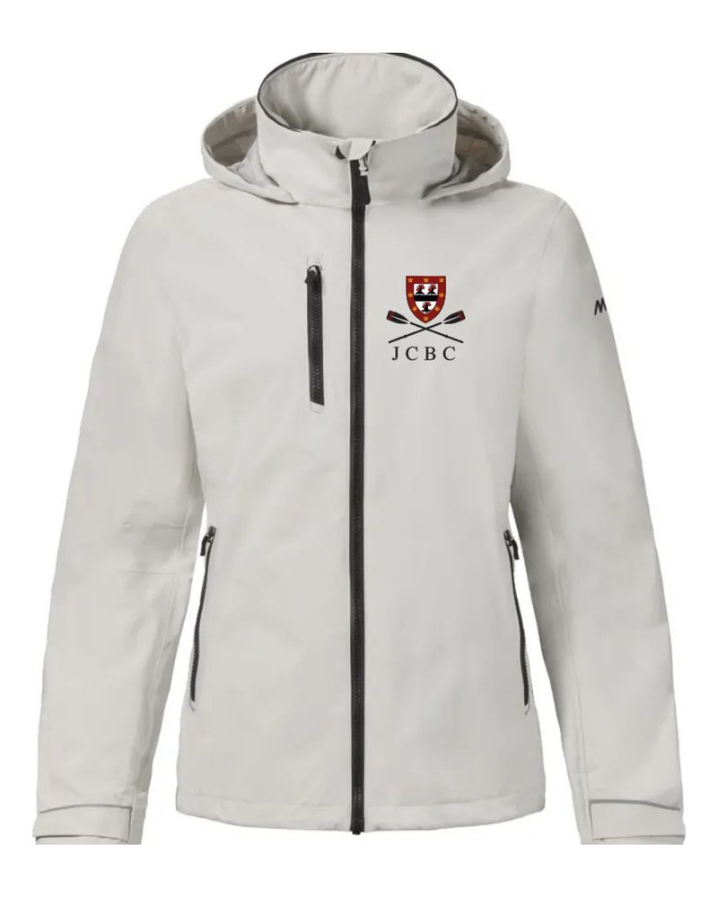
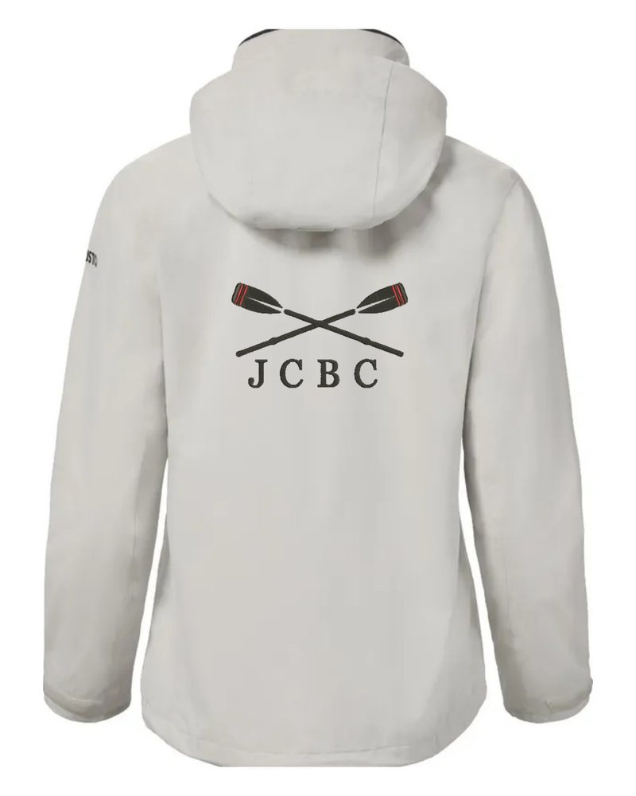

Shown in Platinum


Sardinia Jacket
The lighter of the two. Waterproof, fully seam-sealed Musto Ocean Tech shell with a breathable mesh lining, a hood that packs into the collar, zipped chest pocket and two hand pockets. Best for mild, wet days and layering.
Embroidered club crest with JCBC on the left chest; crossed oars and JCBC across the back.
Full specs on Musto: men's · women's
£157.86